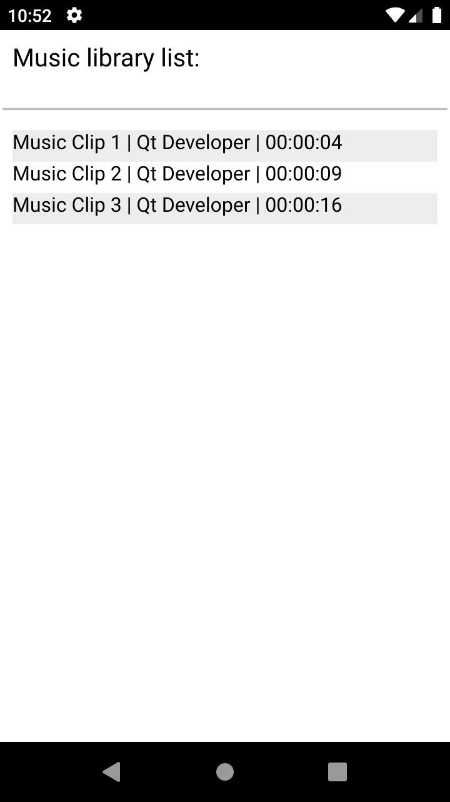

Qt JNI Music List
Demonstrates how to exchange data from complex Java objects.

This example demonstrates how to move around data from a Java ArrayList of objects over to Qt. The example uses Android APIs to retrieve a list of music tracks, and displays some information about them with QML.
When the application starts, it displays a list of music tracks, showing the track name, artist, and duration.
Running the Example
To run the example from Qt Creator, open the Welcome mode and select the example from Examples. For more information, visit Building and Running an Example.
Create the Music Classes
Let's create a Java class, MusicTrack, that defines some of the basic information about a track. In the Java side, create the following:
class MusicTrack {
private String title;
private String artist;
private long duration;
MusicTrack (String title, String artist, long duration) {
this.title = title;
this.artist = artist;
this.duration = duration;
}
public String getTitle() { return title; }
public String getArtist() { return artist; }
public long getDuration() { return duration; }
}
Create another class with the same variables or information on the C++ side. The definition for MusicTrack class is the following:
class MusicTrack : public QObject { Q_OBJECT Q_PROPERTY(QString title READ title CONSTANT) Q_PROPERTY(QString artist READ artist CONSTANT) Q_PROPERTY(long duration READ duration CONSTANT) public: MusicTrack(const QString title, const QString artist, const long duration, QObject *parent = nullptr) : QObject(parent), m_title(title), m_artist(artist), m_duration(duration) {} QString title() const { return m_title; } QString artist() const { return m_artist; } long duration() const { return m_duration; } private: QString m_title; QString m_artist; long m_duration; };
Note: The MusicTrack class must be a QObject-derived class to be used with as a QML context property. For more information, see QML and C++ Integration.
Fetch the Music List
To retrieve the music list, the Android APIs are used. Add the following method to find music tracks that are available on the system. This method returns an ArrayList of MusicTrack.
package org.qtproject.example.musiclist;
import android.content.ContentResolver;
import android.content.Context;
import android.database.Cursor;
import android.net.Uri;
import android.provider.MediaStore;
import java.util.ArrayList;
public class MusicList {
static ArrayList<MusicTrack> fetchMusicList(Context context) {
ArrayList<MusicTrack> musicList = new ArrayList<MusicTrack>();
Cursor songCursor;
try {
ContentResolver contentResolver = context.getContentResolver();
Uri songUri = MediaStore.Audio.Media.EXTERNAL_CONTENT_URI;
songCursor = contentResolver.query(songUri, null, null, null, null);
} catch (SecurityException e) {
e.printStackTrace();
return musicList;
}
if (songCursor != null && songCursor.moveToFirst())
{
int title = songCursor.getColumnIndexOrThrow(MediaStore.Audio.Media.TITLE);
int artist = songCursor.getColumnIndexOrThrow(MediaStore.Audio.Media.ARTIST);
int duration = duration = songCursor.getColumnIndexOrThrow(MediaStore.Audio.Media.DURATION);
do {
String currentTitle = songCursor.getString(title);
String currentArtist = songCursor.getString(artist);
long currentDuration = songCursor.getLong(duration);
musicList.add(new MusicTrack(currentTitle, currentArtist, currentDuration));
} while (songCursor.moveToNext());
}
if (songCursor != null)
songCursor.close();
return musicList;
}
}
Using the JNI helpers provided with Qt, call the previous method to first get an QAndroidJniObject containing an ArrayList of objects. In the C++ code, you need to go through the Java ArrayList and create a parallel list on C++. Add the following lines to do that:
QAndroidJniObject musicList = QAndroidJniObject::callStaticObjectMethod(
"org/qtproject/example/musiclist/MusicList",
"fetchMusicList",
"(Landroid/content/Context;)Ljava/util/ArrayList;",
QtAndroid::androidContext().object());
for (int i = 0; i < musicList.callMethod<jint>("size"); ++i) {
QAndroidJniObject track = musicList.callObjectMethod("get", "(I)Ljava/lang/Object;", i);
const QString title = track.callObjectMethod("getTitle", "()Ljava/lang/String;").toString();
const QString artist = track.callObjectMethod("getArtist", "()Ljava/lang/String;").toString();
const long duration = track.callMethod<jlong>("getDuration");
m_assembledMusicList.append(new MusicTrack(title, artist, duration, this));
}
Then, add a function to return the resulted QList:
QList<MusicTrack *> MusicList::assembledMusicList() const { return m_assembledMusicList; }
To display the music list, create a ListView that uses the QList as a property. Register the property as follows:
MusicList *musicList = new MusicList(&app);
engine.rootContext()->setContextProperty(QLatin1String("musiclist"),
QVariant::fromValue(musicList->assembledMusicList()));
In the QML code, define the model of the ListView as follows:
model: musiclist
See also Qt for Android and Qt Android Extras.